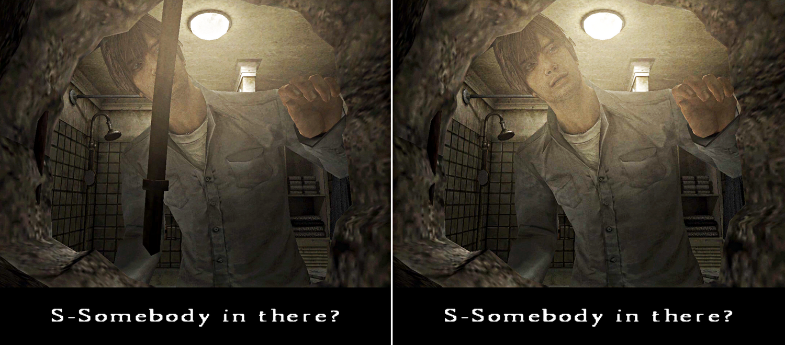
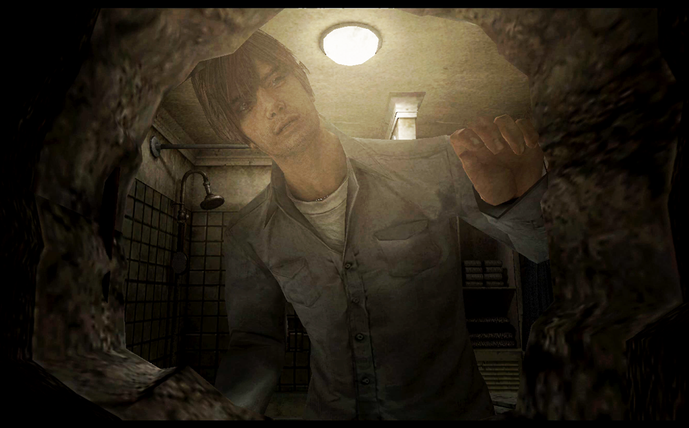
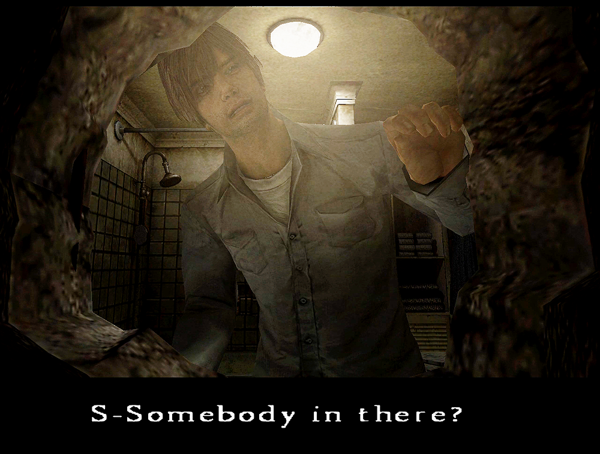
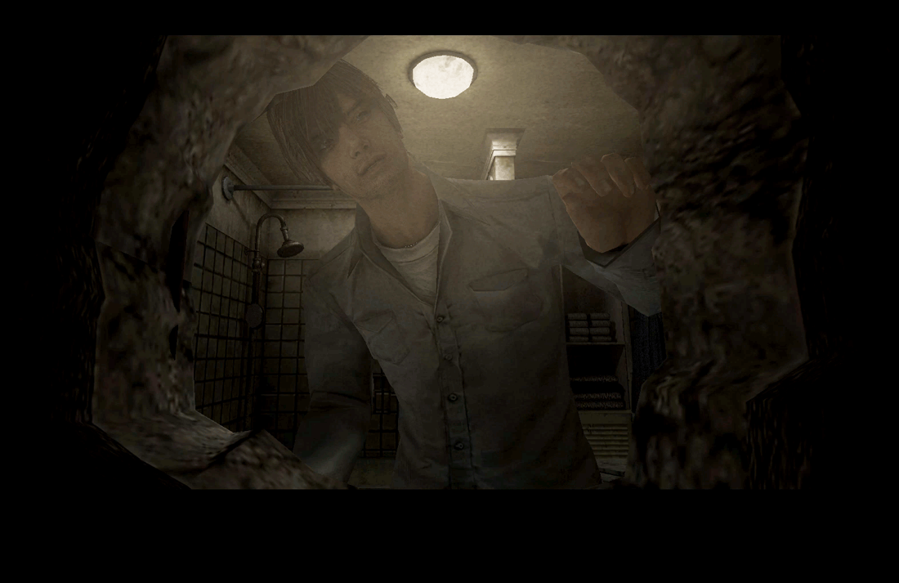
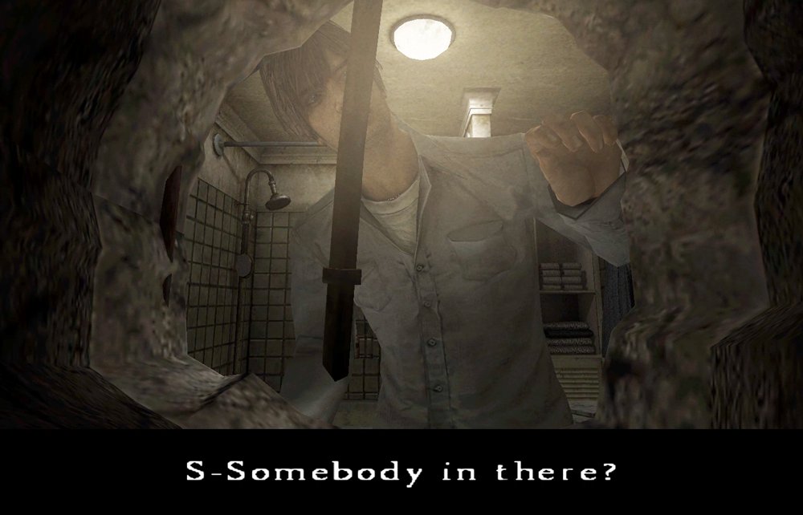
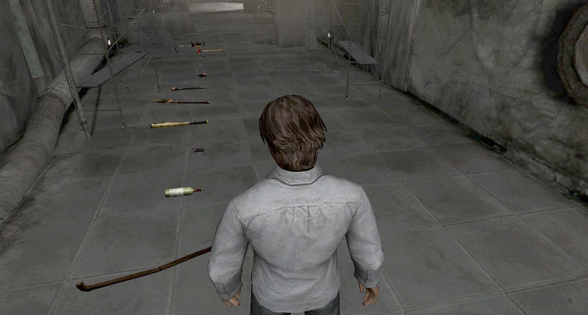
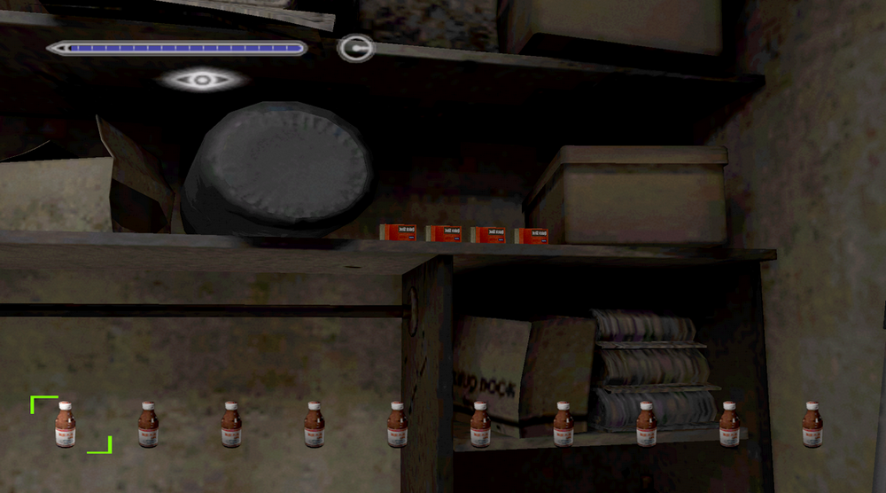
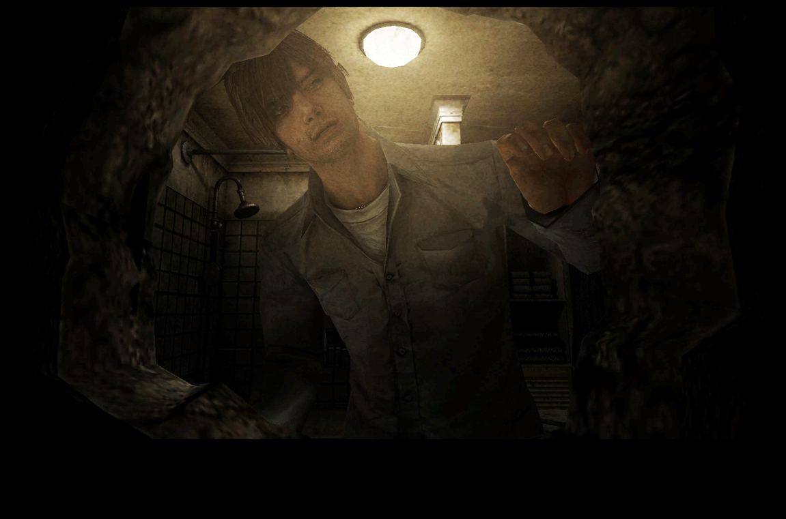

[SH4]One-Weapon Mode Unlock Bonus (what I call it)

Cutscene Exclusive to One-Weapon Mode!!
This is a mirror of the DeviantArt version linked above, provided as a backup and for easier access.

The shot was backlit, so I increased the contrast.
You begin your exploration of the Otherworld by passing through a hole in the bathroom at the beginning of the game, and you obtain the Steel Pipe during that time. This and the Wine Bottle will be your primary weapons at the very beginning of the game.
But in One-Weapon Mode you pick a single weapon in the subway, so the Steel Pipe never appears in the opening cutscene. So you can see Henry's face without it being obscured by the pipe. It only happens in this mode.



In normal mode and the All-Weapon Mode, the pipe gets in the way.

So I call this the "One-Weapon Mode Unlock Bonus." Haha.
Skilled players who can unlock this usually just breeze past it, but it was so hard for me to get that I don't think I could ever do it again, so I think it's quite rare!
For reference, here are the unlock conditions:
One-Weapon Mode: Start with a save file that has earned *100 stars (* HARD difficulty, clear the game within 2 hours, 2 or fewer saves/continues, defeat 120 or more enemies, collect all 52 memos. Ending does not matter). On the subway, choose a weapon other than the pistol, torch, or golf clubs.

All-Weapon Mode: Start with a save file that cleared One-Weapon Mode on Hard mode. When you go to the subway with a steel pipe, you’ll see a selection of weapons other than the pistol, torch, or golf clubs, and can choose whichever you like. Ammo and drinks are replenished every time you return to the room.

By the way, the All-Weapon Mode you unlock after completing the One-Weapon challenge doesn't have any bonus cutscene.
Well, the One-Weapon Mode is pretty easy if you pick the Rusty Axe. So unlocking the All-Weapon Mode itself isn't difficult. Earning the 100 stars required to unlock the One-Weapon was the harder part.
But considering the effort it took, I kind of wish there had been something more. I would've liked a nurse-Henry costume as well. A Princess Heart would've been fine too, haha. Jk!
